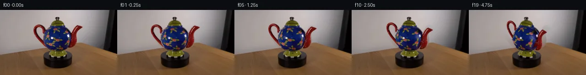

![首帧]()

Round 00
2026-11-05T18:38:30.365945+00:00像素候选变化代码 +222/−0inspection 更新
pixels 6a4d0ce313d84c88 · code 6d4e33d51d7aac96
查看本轮 generate.py 真实 diff
--- previous/generate.py
+++ current/generate.py
@@ -0,0 +1,222 @@
+"""Single-reference clockwise teapot animation using local pixel warps only."""
+from pathlib import Path
+import json
+import cv2
+import numpy as np
+from PIL import Image, ImageDraw
+from scipy.ndimage import distance_transform_edt, gaussian_filter
+from artifact_io import save
+
+ROOT = Path(__file__).resolve().parent
+S = 4
+W, H = 256, 144
+src = np.asarray(Image.open(ROOT / 'first_frame.png').convert('RGB'))
+hi = cv2.resize(src.astype(np.float32), (W*S,H*S), interpolation=cv2.INTER_CUBIC)
+Y, X = np.mgrid[:H*S,:W*S].astype(np.float32)
+X = (X+.5)/S-.5
+Y = (Y+.5)/S-.5
+
+def polygon(points):
+ m=np.zeros((H*S,W*S),np.uint8)
+ pts=np.rint((np.asarray(points)+.5)*S-.5).astype(np.int32)
+ cv2.fillPoly(m,[pts],255)
+ return m.astype(np.float32)/255
+
+def remap(im,x,y):
+ return cv2.remap(im,((x+.5)*S-.5).astype(np.float32),((y+.5)*S-.5).astype(np.float32),cv2.INTER_LINEAR,borderMode=cv2.BORDER_REPLICATE)
+
+# Silhouette measurements are authored only from the supplied first frame.
+body=polygon([(115,36.3),(124,35.1),(133,35.7),(140,38.0),(146,42.3),
+ (151,49),(154,55),(155.7,62),(154.6,70),(151.5,77.6),(147,83.1),
+ (141,88),(133,91),(124,91.7),(116,90.1),(109,86.7),(103,81.6),
+ (98.8,75),(96,68),(95.1,60.8),(96.7,53),(100.6,46),(106.5,40.2)])
+# Red material is selected inside manually bounded handle and spout regions.
+red=(hi[:,:,0]>hi[:,:,1]*1.48)&(hi[:,:,0]>hi[:,:,2]*1.34)&(hi[:,:,0]>43)
+handle_region=polygon([(73,33),(95,30),(101,42),(102,56),(110,84),
+ (97,85),(78,63),(71,49)])
+spout_region=polygon([(147,81),(146,57),(154,48),(163,34),(176,31),
+ (183,36),(173,46),(168,55),(170,70),(161,81),(152,85)])
+# Include the pale ceramic glints immediately adjacent to red pixels.
+redmask=cv2.morphologyEx(red.astype(np.uint8),cv2.MORPH_CLOSE,np.ones((S,S),np.uint8))
+redmask=cv2.dilate(redmask,np.ones((3,3),np.uint8)).astype(np.float32)
+handle=np.minimum(redmask,handle_region)
+spout=np.minimum(redmask,spout_region)
+handle*=1-body
+spout*=1-body
+# Remove soft outline contamination with a narrow feather at each source edge.
+def soft_edge(m):
+ d=distance_transform_edt(m>.5)/S
+ return np.minimum(d/.55,1).astype(np.float32)
+handle=soft_edge(handle)
+spout=soft_edge(spout)
+
+lid=polygon([(110.4,34.5),(113,28.8),(117,25),(124,23.2),(131,24),
+ (136,27.4),(139,31.5),(140.2,35.5),(137.5,38.5),(112,38.4)])
+knob=polygon([(120,24.5),(121,20.9),(120.7,17.2),(124,14.9),(127,15.5),
+ (129.6,18.7),(126.4,21.4),(127.7,24.3)])
+foot=polygon([(117.1,89.5),(137.3,88.7),(139.2,94.2),(143.2,97.2),
+ (146.6,102),(145.8,106.1),(138.5,108.4),(128,109),(115,107.9),
+ (107.7,104.5),(108.2,99.5),(112,94.9)])
+
+# Reconstruct only the wall revealed by receding red attachments. The wall in
+# this area is smooth; a robust local polynomial uses visible nearby pixels.
+all_obj=np.maximum.reduce([body,handle,spout,lid,knob,foot])
+erase=cv2.dilate(((handle+spout)>.03).astype(np.uint8),np.ones((S*2+1,S*2+1),np.uint8))>0
+fit=((X>63)&(X<192)&(Y>21)&(Y<87)&(all_obj<.01)&(~erase))
+# Avoid the table edge at the lower right when fitting the wall.
+fit &= Y < (85 - .22*np.maximum(X-151,0))
+xf=(X-126)/65; yf=(Y-55)/40
+basis=np.stack([np.ones_like(X),xf,yf,xf*xf,xf*yf,yf*yf],axis=-1)
+params=np.linalg.lstsq(basis[fit][::8],hi[fit][::8],rcond=None)[0]
+wall=np.clip(basis@params,0,255).astype(np.float32)
+bg=hi.copy()
+# Feather only outside original teapot body. The platform is never inpainted.
+erase_alpha=cv2.GaussianBlur(erase.astype(np.float32),(0,0),.35*S)
+bg=bg*(1-erase_alpha[:,:,None])+wall*erase_alpha[:,:,None]
+
+# Clean small fixed specular glints from the material texture. Specular
+# highlights are composited back at their original world-lit locations.
+hsv=cv2.cvtColor(np.clip(hi,0,255).astype(np.uint8),cv2.COLOR_RGB2HSV)
+highlight=((hsv[:,:,1]<78)&(hsv[:,:,2]>171)&(body>.5)&(Y>46)&(Y<75)).astype(np.uint8)
+highlight=cv2.dilate(highlight,np.ones((3,3),np.uint8))
+texture=cv2.inpaint(np.clip(hi,0,255).astype(np.uint8),highlight*255,3*S,cv2.INPAINT_TELEA).astype(np.float32)
+# Background and non-blue pixels outside the body are excluded from sampling.
+inside_body=body>.5
+_,nearest=distance_transform_edt(~inside_body,return_indices=True)
+bodytexture=texture.copy()
+bodytexture[~inside_body]=texture[nearest[0][~inside_body],nearest[1][~inside_body]]
… diff truncated; 135 more lines …